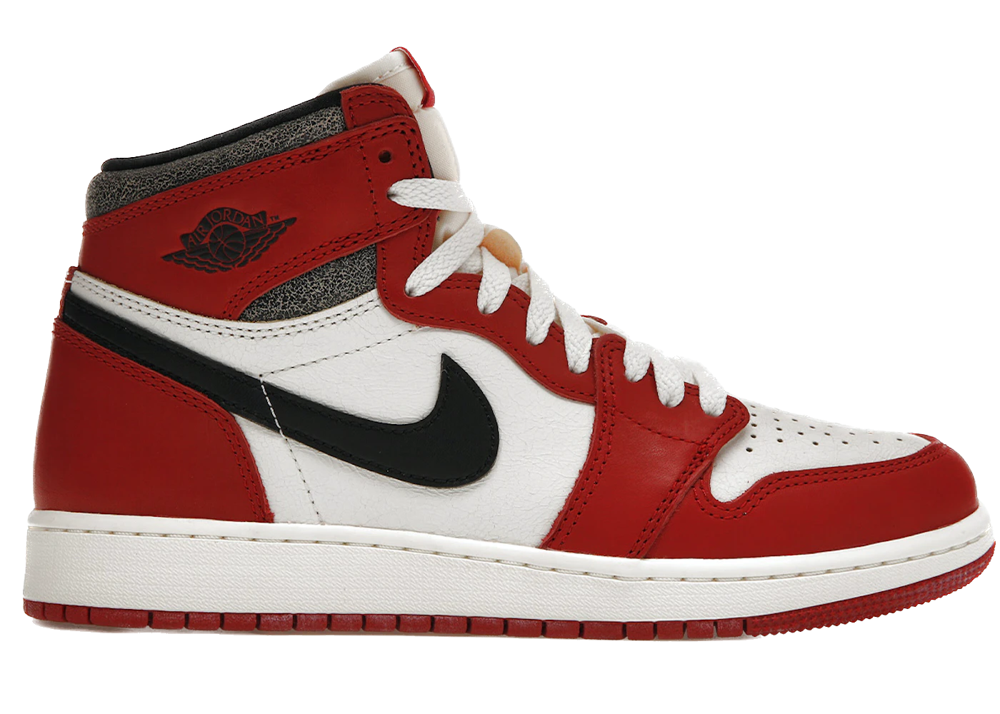

The First Chapter: Air Jordan 1
Michael Jordan's First Silhouette Sneaker from Nike
History
The first Air Jordan shoe was produced for basketball player Michael Jordan during his time with the Chicago Bulls on November 17, 1984 and released to the public on April 1, 1985. The shoes were designed for Nike by Peter Moore, Tinker Hatfield, and Bruce Kilgore.
OG vs Non-OG Colorways
"Retro Jordans" and "OG Jordans" are terms commonly used by sneaker enthusiasts and collectors to describe different types of Air Jordan sneakers, which are a popular line of basketball shoes and lifestyle sneakers produced by Nike in collaboration with Michael Jordan. Only certain OG colorways have been retro'ed/rereleased.

| OG Coloways | Non-OG Colorways | Retro Colorways |
|---|---|---|
| Chicago 1s | Turbo Green 1s | White Cement 4s |
| Royal 1s | Hyper Royal 1s | Black Cement 3s |
| Shadows 1s | White Oreo 4s | Military Blue 4s |
| Black Toes 1s | Taxi 1s | Concord 11s |
| Bred 1s | A Ma Maniere 1s | Infrared 6s |